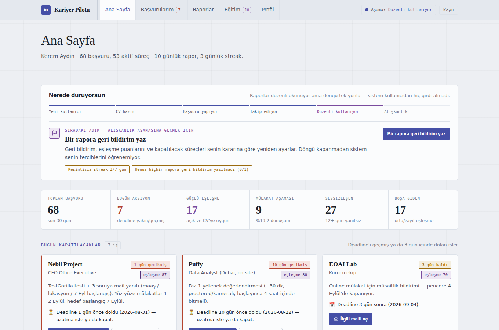
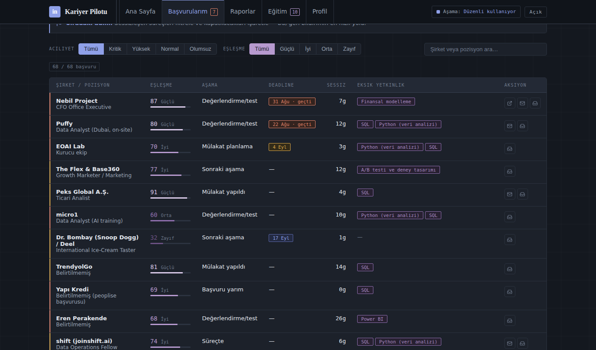
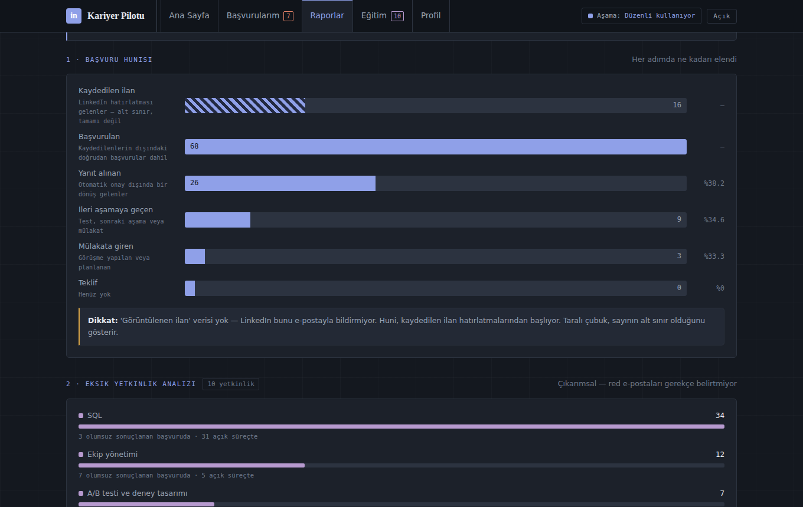
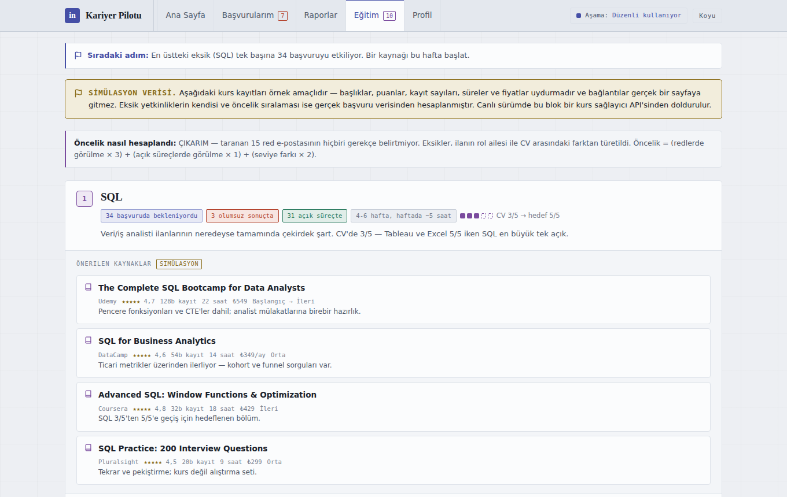
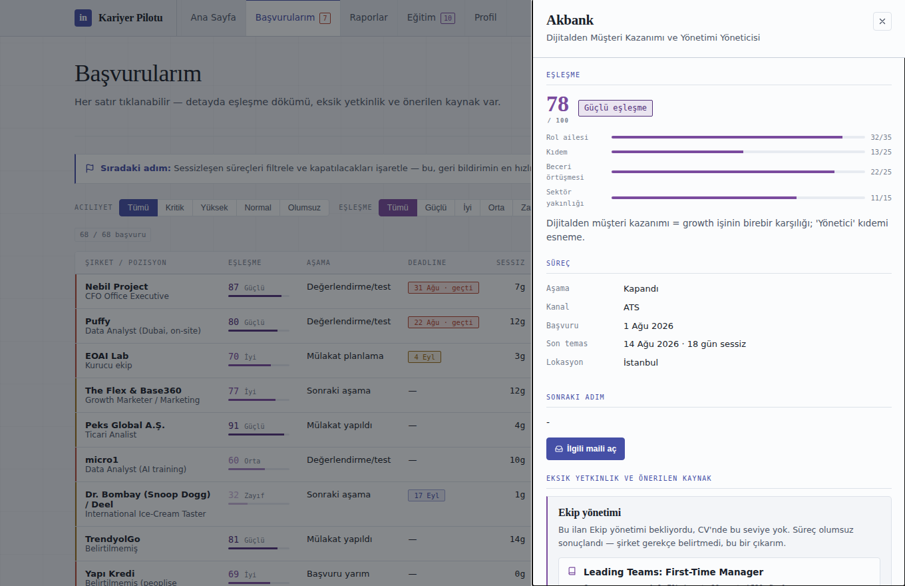

Gmail'i her sabah tarar, başvuruları tek yerde toplar, her ilanı CV'ye göre 0–100 arası puanlar ve hangi eksik yetkinliğin kaç süreci etkilediğini çıkarır. 30 günlük gerçek bir iş arama sürecinin verisi üzerine kuruldu.

Bir ayda 68 başvuru yapıldığında hangisinin nerede olduğu, hangi testin süresinin dolduğu ve hangi sürecin sessizce öldüğü takip edilemiyor. Aşağıdakiler tahmin değil — taranan Gmail kutusundan çıkan gerçek sayılar.
Gmail'de son 24 saatin iş temalı e-postaları aranır. LinkedIn ilan bildirimleri, bültenler ve Glassdoor gürültü sayılıp yalnızca adet olarak raporlanır.
Her e-posta sırayla etiketlenir: teklif → mülakat daveti → aksiyon gerekli → red → incelemede. İlk eşleşen kazanır.
İki ayrı eksen hesaplanır: aciliyet (bugün ne yapmalıyım) ve eşleşme (enerjimi nereye harcamalıyım). İkisi karıştırılmaz.
Öncelik tablosu ve hatırlatmalar e-postayla gelir. Pazartesileri dört soru sorulur; yanıt ertesi taramada puanlara işlenir.
Yüklenen CV'den bir profil türetilir: kıdem bandı, araç seviyeleri, güçlü alanlar ve bilinen açıklar. Her ilan bu profile karşı dört boyutta puanlanır ve dört segmente ayrılır.

Başvuru hunisi, eksik yetkinlik analizi, haftalık trend, şirketlerin yanıt hızı, rol bazlı başarı, kanal etkinliği, kullanım streak'i ve kaçırılan fırsatlar.

Her ilanın beklediği ama CV'de olmayan yetkinlik kaydedilir. Bunlar toplanıp öncelik sırasına dizilir; en üstteki eksik tek başına 34 başvuruyu etkiliyor.

Kullanıcı, ölçülebilir kriterlerle altı aşamalı bir hattın üzerinde konumlanır: yeni kullanıcı → CV hazır → başvuru yapıyor → takip ediyor → düzenli kullanıyor → alışkanlık.

SQL en yaygın eksik (34 başvuruda bekleniyor) ama olumsuz sonuçlanan 15 sürecin 7'sinde eksik olan ekip yönetimi. Yani sorun teknik beceri değil, Manager/Lead ilanlarına yapılan başvurular. Bu, kurs alarak değil hedef bandını değiştirerek çözülür.
68 başvurunun 17'si orta veya zayıf eşleşme. Güçlü segmentin ileri aşamaya geçme oranı %18,2; zayıf segmentin ilerlemesi ise istatistiksel gürültü. Aynı efor güçlü segmente kaydırılsa mülakat sayısı artar.
Kaydedilen 16 ilanın 12'sine hiç başvurulmamış. Bunlardan Michael Page'in FP&A Analyst ilanı 88 eşleşme puanıyla listenin en güçlüsüydü ve 20 Ağustos'ta kapandı. Takip edilmeyen şey kaybediliyor.
Yanıt veren şirketlerde medyan 10 gün. 42 başvuru ise hiç yanıtlanmadı. Bu iki sayı birlikte, 12 gün sessizlikten sonra takip maili atma kuralının eşiğini belirledi.
applications.json — başvurular, eşleşme boyutları, eksik yetkinliklerprofile.json — CV'den türetilmiş profilskills_catalog.json — beceri → kaynak eşlemesijourney.json — yaşam döngüsü aşamalarıengagement.json — gerçek kullanım kaydısaved_jobs.json — kaydedilip başvurulmayanlarmatch.py — CV ↔ ilan eşleşmesi ve segmentasyonpipeline.py — önceliklendirme, hatırlatma, raporinsights.py — sekiz rapor ve eğitim planıbuild_dashboard.py — şablona veri enjeksiyonu68 gerçek başvurunun tamamı, sekiz rapor ve eğitim planı yüklü halde açılır. Kurulum gerekmez.